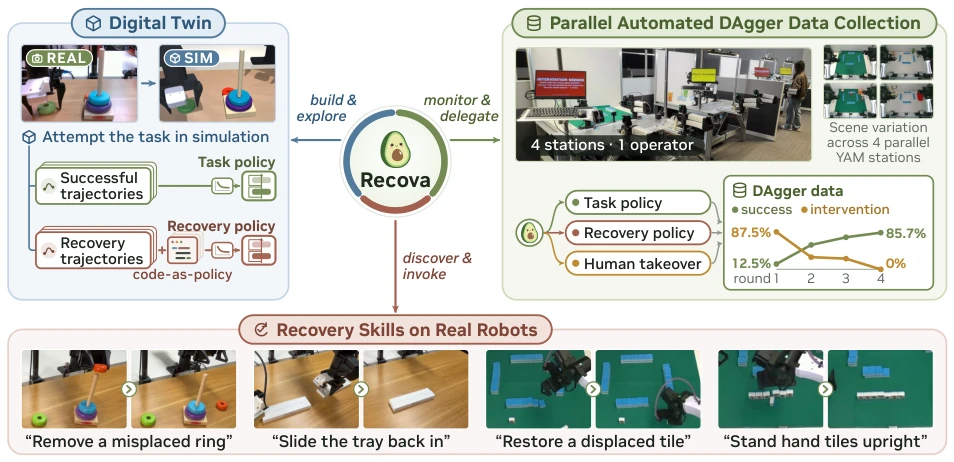
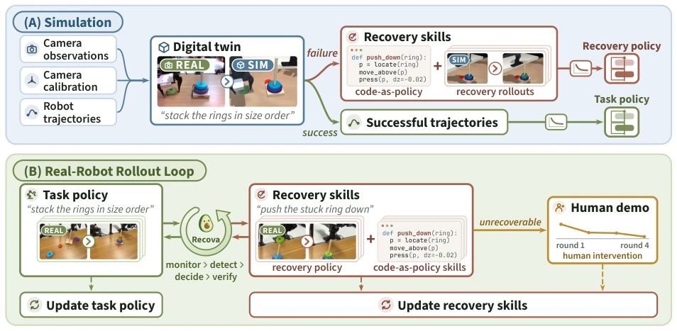
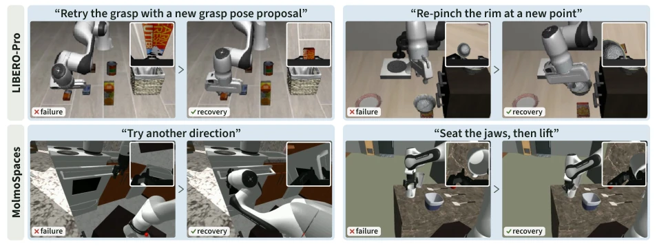
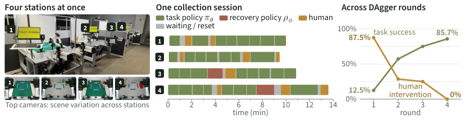
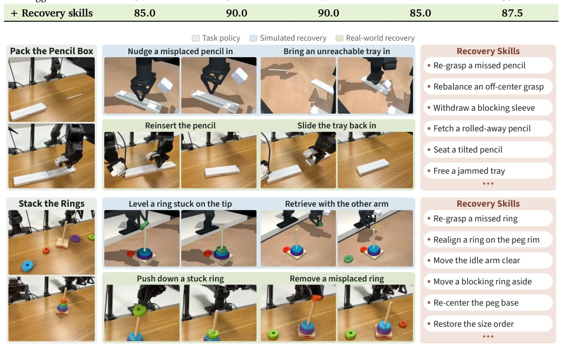
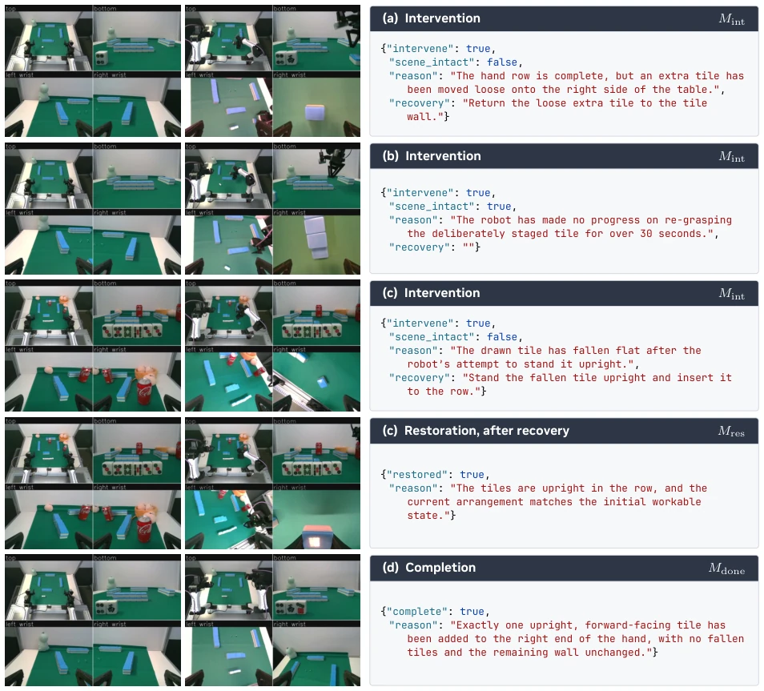
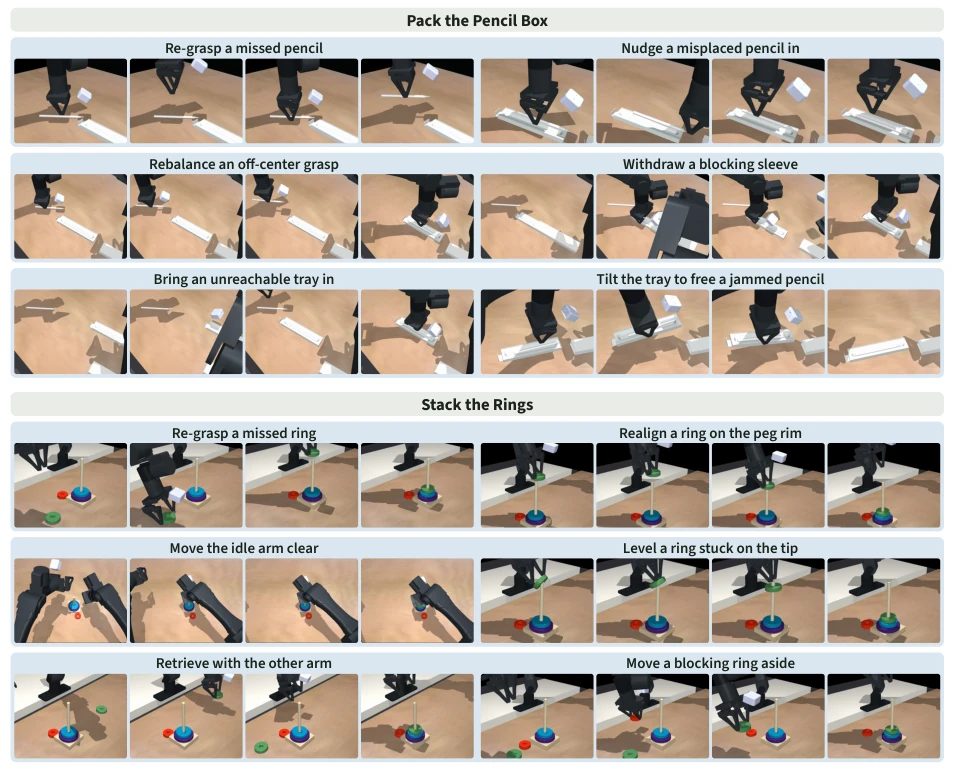
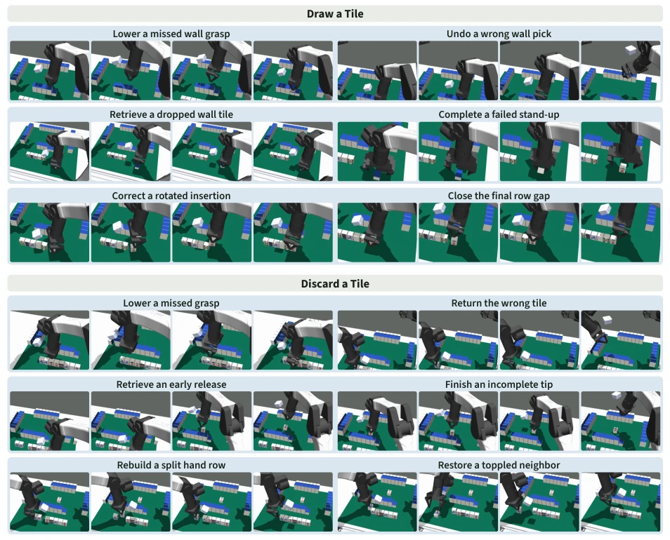
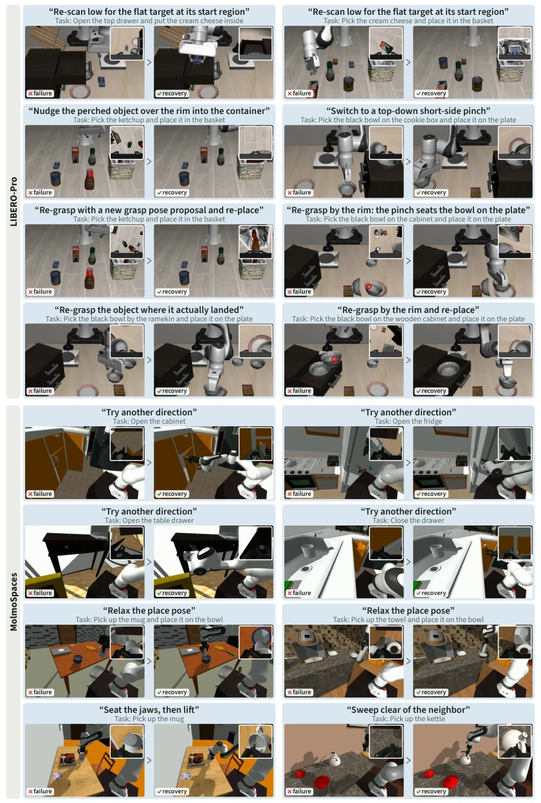

This paper essentially finds a legitimate way out for remedial measures after robots "smash a cup as a signal". Recova's core logic is clear: do not just train on successful paths; failure is the norm. It employs an Agent to extensively trial-and-error within a digital twin, turning failures into a reusable skill library, and then deploys them on real robots to run the DAgger loop. The advantage is that it indeed separates "fixing the scene" from "continuing work"; otherwise, the VLA model collapses entirely upon getting stuck. But the disadvantages are also obvious: the cost of digital twin reconstruction is not low; if the Agent's coding ability is subpar, the recovery strategy becomes a castle in the air. Furthermore, relying on human intervention to label new failure modes is safer than pure RL, but still requires human labor costs. However, looking at the data, the real robot intervention rate dropped from 87.5% to 0%; this improvement is indeed more substantial than certain VLA models that rely purely on grinding data, at least proving that recovery capability can be learned.
Although Vision-Language-Action (VLA) models can understand instructions, once the scenario deviates from the preset, such as a cup falling or a pencil getting stuck, the strategy fails [3][4]. Existing methods either focus only on successful trajectories or have trial-and-error costs that are too high on real robots, easily damaging objects [29][58]. Although some works have attempted recovery strategies, such as RACER [13] or FailSafe [32], they often lack a systematic sim-to-real closed loop or rely on fixed recovery controllers [29]. Recova aims to solve how to explore long-tail failure modes at low cost and make recovery skills accumulative like task skills. It cites code generation methods such as ASPIRE [41] and CaP-Agent0 [16], but points out they lack a synergistic recovery mechanism with VLA policies. More importantly, existing benchmarks mostly focus on success rates under initial states, ignoring recovery capability after failure [39].

Figure 1: Overview of Recova. Digital twin (top left): A coding agent explores task execution in a reconstructed workstation and develops recovery skills from failures. Task and recovery trajectories train separate policies, while recovery programs form a reusable skill library. Parallel DAgger (top right): Across four real-robot stations, the agent coordinates execution and verified recovery, requests human help when needed, and uses the resulting experience to improve both policies. Success rises and human intervention falls over training rounds (Fig. 4). Recovery skills (bottom): Paired frames show learned recoveries executed on real robots. Project page: https://www.liuisabella.com/Recova
The overall process is divided into three steps. First is digital twin construction; the Agent reconstructs the workstation based on real camera data and trajectories [3.2]. The Agent intentionally creates failures in simulation, generating recovery instructions and code (code-as-policy), training independent Recovery Policy and Task Policy. Second is real deployment; the Monitor detects if the task is deadlocked, triggers the Recovery Policy or code skills, and resumes after verifying scene recovery. Finally is DAgger learning; success trajectories and human demonstrations update the two policies respectively [3.4]. The innovation lies in the "dual-track system": the task policy only manages completing goals, the recovery policy specifically handles anomalies, and recovery skills can be either learned policies or Agent-generated code. This separation avoids contaminating the task policy with failure samples, while the Agent is responsible for exploring new failure modes at low cost in simulation. Furthermore, the system supports parallel collection, with four workstations running simultaneously, significantly improving data efficiency.

Figure 2: (A) Simulation: Recova builds a digital twin from camera observations, calibration, and robot trajectories. Successful task and recovery rollouts train separate policies, while recovery programs populate a code-as-policy skill library. (B) Real-robot rollout: Recova monitors execution, invokes recovery policies or programs, verifies restoration, and requests human demonstrations when needed. Task successes, verified recoveries, and human demonstrations update the corresponding policies, while new failures guide skill-library expansion. Paired frames show rollout endpoints; the inset tracks human intervention across DAgger rounds.
In simulation, on two benchmarks LIBERO-Pro and MolmoSpaces, Recova achieved success rates of 78.8% and 64.9% respectively, outperforming ASPIRE [41] and RATs [67]. Real robot experiments were conducted in parallel on 4 YAM workstations, tasks including stacking rings, filling pen boxes, etc. The base policy success rate was only 23.8%, rose to 77.5% after DAgger fine-tuning, and reached 87.5% after adding recovery skills. The most striking is the human intervention rate, which dropped from 87.5% to 0% after 4 rounds of training [Fig. 4]. Ablation experiments show recovery skills contributed an improvement of about 10 percentage points, especially in single-object occlusion scenarios. Furthermore, code-generated recovery skills were verified effective in simulation and successfully transferred to real robots, proving the effectiveness of Sim-to-Real.

Figure 3: Recovery skills in simulation. The failure (left) and recovery (right) moments of one LIBERO-Pro (top) or MolmoSpaces (bottom) episode: the main camera view, with the wrist camera inset at the top right, under the recovery instruction.

Figure 4: Parallel automated DAgger data collection. Left: Four robot stations operate in parallel with varied scene configurations. Middle: Station activity during one collection session, distinguishing task-policy execution, recovery-policy execution, human control, and waiting or reset periods. Right: Observed task success and human intervention rates across four collection rounds. As policies are fine-tuned on accumulated data, task success increases while human intervention decreases.

Figure 5: Real-robot tasks and their recovery skills. For each task, the gray panel shows the start and result of a task-policy rollout. Each recovery skill appears under its name as two frames of one rollout, the action and then the result, developed in the digital twin (blue) or executed on the robot by a learned recovery policy (green). The list on the right names further recovery skills.
其他图片Other Figures

Figure 7: Recorded monitor verdicts while drawing a mahjong tile. Each image is the four-camera composite sent to the monitor. (a) The monitor reuses a known recovery skill verbatim. (b) A stalled task in an intact scene leads to a task demonstration. (c) The recovery policy executes the proposed instruction, and the restoration query confirms the scene. (d) The completion query accepts a finished task.

Figure 8: Simulated recovery skills for pencil-box packing and ring stacking. Each blue panel shows one recovery skill developed in the task’s digital twin, as four frames of one rollout, from the failure to the result. Frames come from the twin’s inspection camera, except Move the idle arm clear (top camera).

Figure 9: Simulated recovery skills for drawing and discarding a mahjong tile. Panels follow the conventions of Fig. 8.

Figure 10: Recovery examples on LIBERO-Pro (top) and MolmoSpaces (bottom). Each panel shows one episode’s failure and recovery moments under its recovery instruction and task, as in Fig. 3. Red rings in some LIBERO-Pro frames are markers from the source recordings.